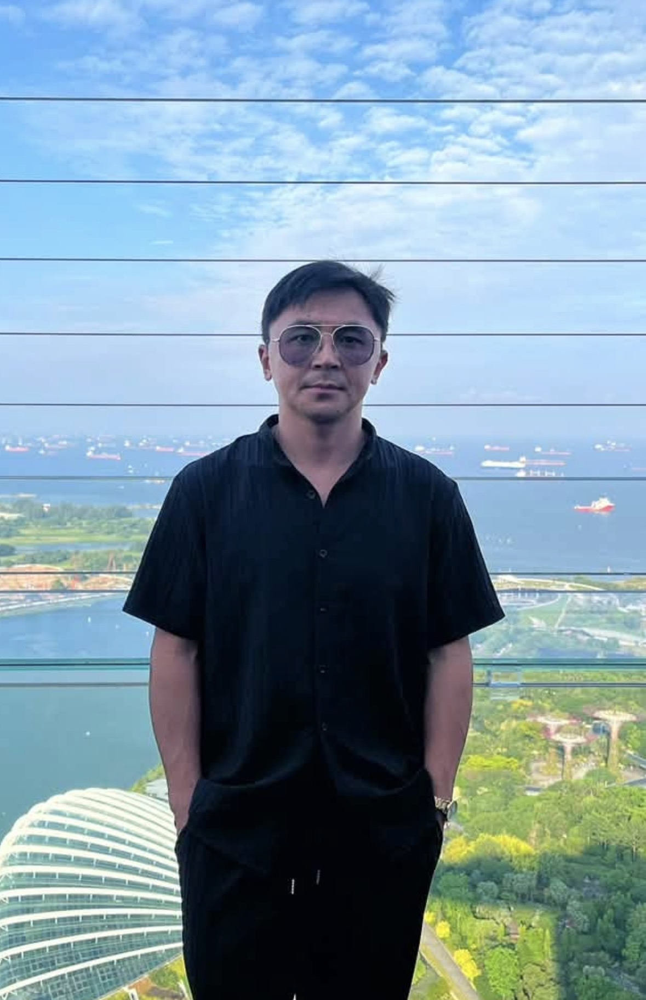

Book your appointmentPick a service and time on Timely — secure, instant confirmation.Open booking page →
The team

BKAdd barber portrait
Khemchik
I'm Khemchik, and I've been cutting hair for most of my life. I trained as a hairstylist and barber in Moscow before making the move to Wellington, where I opened my own shop back in 2022. Every year since has come down to the same few things — getting a little sharper at what I do, and looking after the people who sit in my chair.
For me it was never just about the haircut. It's the conversation, the fresh-cut feeling when you walk out the door, and knowing you'll want to come back. Whether it's your first visit or your fiftieth, you'll get my full attention and a cut that actually suits you.